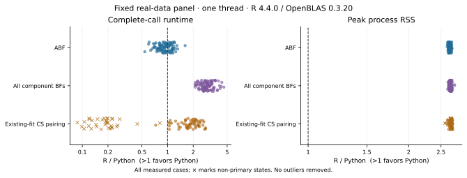

On this page
pycoloc
Bayesian colocalisation in Python.
Compare two traits using approximate Bayes factors or SuSiE-derived component Bayes factors, with numerical validation against R coloc. pycoloc implements established colocalisation methods using NumPy/SciPy and an optional Numba kernel.
- Numerical agreement: ABF and identical-BF/fit comparisons cover all 100 real regions.
- Measured BF pairing: 2.91× paired geometric-mean speedup on 99 mutually converged regions.
- Lower peak process RSS: ABF median 97.7 MiB versus 259 MiB for R, with lower peaks in all 100 cases.
Numerical agreement
Fresh pycoloc 0.2.2 calculations use the same inputs as frozen coloc 6.0.3 outputs on 100 real regions. The largest absolute H0–H4 differences are 1.07×10⁻¹⁴ for ABF, 1.02×10⁻¹¹ for full component-BF pairing and 1.60×10⁻¹⁴ for pairing the same official SuSiE fits.
With prusie 0.3.1 fitting each trait first, 99 regions have mutually converged fits; 65 yield posterior pairs and 34 have no CS. Across the 65 numeric comparisons, regional maximum H0–H4 differences have median 1.77×10⁻¹¹, 95th percentile 4.00×10⁻⁹ and maximum 9.70×10⁻⁹. The largest conditional SNP difference is 7.47×10⁻⁸. CS membership agrees; region25's nonconverged fit is reported separately. See R agreement for distributions, toy-example results and the intentional scientific corrections.
Performance
Measured pycoloc 0.2.2rc3 complete calls with one numerical thread against coloc 6.0.3 in R 4.4.0 / OpenBLAS 0.3.20. The fixed panel contains 100 real regions, 103–4162 SNPs each. Tables include all ABF cases and converged BF/CS pairings with available output.
| Task | Comparable cases | Median time, R → Python (ms) | Paired speedup¹ | Faster / tied / slower |
|---|---|---|---|---|
| ABF | 100/100 | 4.33 → 4.29 | 0.928× | 35 / 0 / 65 |
| All component BFs | 99/100 | 40.3 → 13.5 | 2.91× | 99 / 0 / 0 |
| Existing-fit CS pairing | 65/100 | 8.49 → 4.2 | 1.81× | 64 / 0 / 1 |
¹ Geometric mean of per-case speedups; seven retained repetitions after warmup. Speedup pairs each case; the displayed time columns are separate across-case medians.
ABF was slower in 65/100 cases. Across all 100 CS-pairing calls, including 34 no-CS regions and one nonconverged region, there were 64 faster and 36 slower calls; geometric-mean speedup was 0.812×.
| Task | Median peak process RSS, R → Python (MiB) | Lower / tied / higher in Python |
|---|---|---|
| ABF | 259 → 97.7 | 100 / 0 / 0 |
| All component BFs | 260 → 97.5 | 99 / 0 / 0 |
| Existing-fit CS pairing | 260 → 96.9 | 65 / 0 / 0 |

Peak process RSS includes imports, inputs and full results, measured in a separate fresh process. Methods, all cases, repeat variability and public-fixture results give the comparison scope.
Installation
Install pycoloc 0.2.2 with Python ≥3.10 from the GitHub Release wheel:
python -m pip install https://github.com/LucaJiang/pycoloc/releases/download/v0.2.2/pycoloc-0.2.2-py3-none-any.whl
Or install the tagged source:
python -m pip install "git+https://github.com/LucaJiang/pycoloc.git@v0.2.2"
pycoloc is not published on PyPI. The PyPI project named pycoloc is unrelated:
pip install pycoloc installs that other package. This GitHub repository is private;
access to its source and Release assets requires authorization. For the wheel path,
download the asset while signed in and install the local file if pip cannot authenticate.
Keep a checkout for the bundled offline example data.
Quick start
Run from the checkout. The bundled data are the complete synthetic 500-SNP coloc toy example, with stored quantitative-trait sample sizes and sdY.
import json
from pathlib import Path
import numpy as np
from pycoloc import coloc_abf
data = Path("examples/data")
metadata = json.loads((data / "metadata.json").read_text())
with np.load(data / "inputs.npz", allow_pickle=False) as arrays:
datasets = [
dict(
snp=metadata[key]["snp"],
type=metadata[key]["type"],
N=metadata[key]["N"],
sdY=metadata[key]["sdY"],
beta=arrays[key + "_beta"],
varbeta=arrays[key + "_varbeta"],
)
for key in ("D1", "D2")
]
result = coloc_abf(*datasets)
print(result.summary[[f"PP.H{i}.abf" for i in range(5)]])
print(result.results[["snp", "SNP.PP.H4"]].nlargest(5, "SNP.PP.H4"))
PP.H4.abf is support for a shared causal variant. H0 means neither trait is
associated; H1/H2 mean only one is associated; H3 means different causal variants.
SNP.PP.H4 ranks variants conditional on H4, so interpret it alongside H4 support;
it is not a fine-mapping PIP. This example returns H4 ≈0.99917 and ranks s105 first.
Methods and scope
The APIs support variant prior weights and existing SuSiE fits; the package also provides locus plots. Fit each trait once and reuse it for subsequent pairings.
| Input | Function | Interpretation |
|---|---|---|
| Beta/SE² or P values with required metadata | coloc_abf |
At most one causal variant per trait; no LD required |
| Full component log-BF rows | coloc_bf_bf |
Posterior for each component pair |
| Existing SuSiE fits | coloc_susie |
Pairs original credible-set components; keeps every SNP column |
Each pair-specific H4 in a multiple-signal analysis describes that comparison; those rows do not define a region-wide posterior. Fine-mapping with prusie is optional. ABF and existing-fit pairing run directly without a fine-mapping dependency. For SuSiE, signed LD r, SNP/effect-allele alignment and convergence matter; see inputs and the fit-reuse example.
Documentation and reproducibility
Read the documentation site, API, results and locus plots. Run the offline frozen-reference check after installation:
python examples/check_example.py --output-dir example-output
Comparison scripts, input provenance and per-field checks are linked from the agreement report.
Citation and license
Maintained by Wenxin Jiang. Cite the original coloc methods and identify the pycoloc version used; package citation metadata is in CITATION.cff. GPL-3.0-or-later; see LICENSE and third-party notices for the retained upstream code and example-data terms.